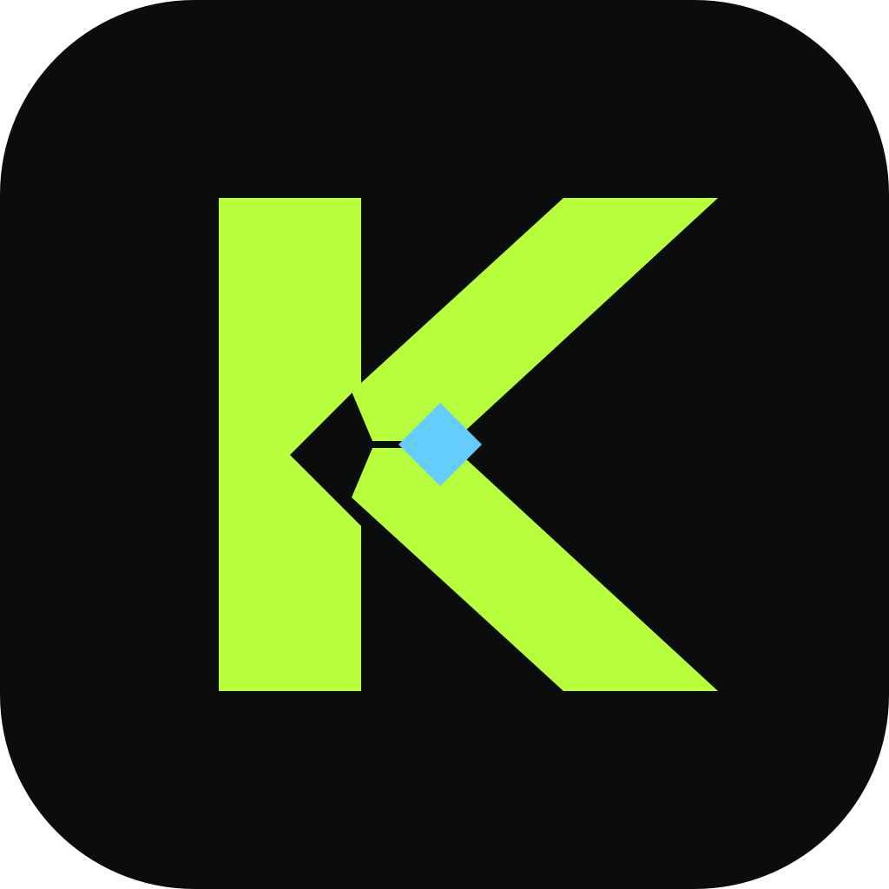

KnovCopy this code into Knov
Paste this into Knov → Sources → Slack, in the box “Paste the code from the browser”, then press Finish connecting.
The code works once and expires in a few minutes. This page does not send it anywhere; only Knov on your Mac exchanges it with Slack.
Slack did not authorize Knov
Return to Knov → Sources → Slack and choose Start over to try again.
No Slack code here
This page shows the one-time code after you approve Knov in Slack. Start from Knov → Sources → Slack → Open Slack to authorize.